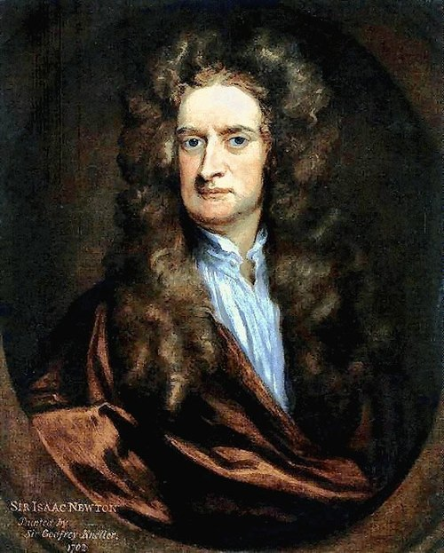

| inicio | logros | galeria | contacto |
| SUS LOGROS | |||
 |
|||
Las aportaciones de Newton fueron tan vastas que transformaron la ciencia para siempre. Aquí tienes una explicación amplia y clara de sus contribuciones más importantes: ⭐ 1. Ley de la Gravitación UniversalNewton formuló la idea de que todas las masas del universo se atraen entre sí, desde una manzana hasta los planetas y las estrellas. Su impacto:
⭐ 2. Las Leyes del MovimientoNewton formuló tres leyes que explican cómo se mueven los cuerpos:
Estas leyes describen prácticamente todo el movimiento del mundo físico, desde una pelota hasta una nave espacial. Su impacto:
⭐ 3. Cálculo matemáticoNewton (y Leibniz por separado) desarrolló el cálculo infinitesimal, una herramienta matemática esencial para describir cambios continuos. Su impacto:
⭐ 4. Óptica y naturaleza de la luzNewton descubrió que la luz blanca está compuesta por todos los colores del espectro, demostrable con prismas. Además desarrolló una teoría corpuscular de la luz. Su impacto:
⭐ 5. Contribuciones a la química y la alquimiaAunque parte de su trabajo en alquimia era especulativo, Newton investigó transformaciones de materiales y propiedades físicas que influyeron en el origen de la química moderna. |
|||
| Ivonne Mendoza 3°c | |||